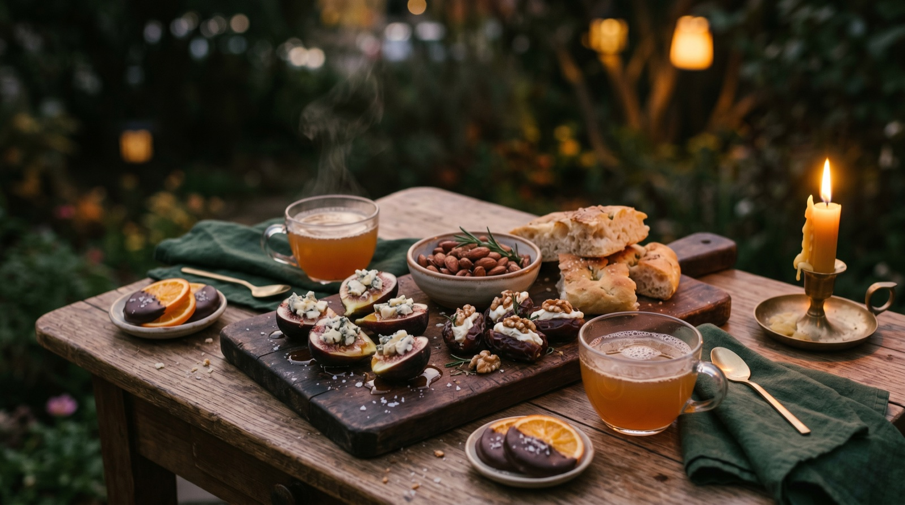

Dein erster Abend
So wirst du Gastgeber:in.
Der erste Abend ist der schwerste. Diese Seite nimmt dir die Unsicherheit — in fünf Schritten von der Idee zum echten Gespräch.
Ein Thema wählen, das dich selbst reizt.
Das Wichtigste vorweg: Such dir ein Thema aus, das dich beschäftigt. Nicht das, von dem du denkst, es könnte „die Gruppe interessieren". Wenn du beim Lesen des Ablaufs denkst „das wäre ein Gespräch, das ich selbst gern führen würde" — dann ist es das richtige.
Tipp: Für die allererste Runde eignen sich „Was sind meine Werte?", der Frageabend oder „Ein idealer Tag" besonders gut. Sie sind zugänglich, brauchen keine große Vorkenntnis, niemand muss sich exponieren.
Alle Themen ansehen arrow_forwardDie Gruppe zusammenstellen — klein und mutig.
Ideal sind 4 bis 6 Personen. Mehr wird schnell unruhig, weniger kippt schwerer in echte Tiefe. Wichtiger als die Zahl ist die Mischung: Menschen, die einander mindestens oberflächlich kennen und die Offenheit mitbringen, für zwei Stunden Handys wegzulegen.
Bei der Einladung ehrlich sein, was auf sie zukommt: „Es ist kein normaler Abend. Wir werden durch ein strukturiertes Gespräch geführt, jede:r bekommt Raum zu erzählen, 'Pass' ist immer okay. Dauert etwa zwei Stunden."
Tipp: Ein Satz in der Einladung macht den Unterschied: „Wenn du keine Lust hast, über persönliche Dinge zu reden, ist das auch völlig okay — dann ist dieser Abend aber nicht das richtige." So filtert sich die Gruppe selbst.
Den Raum vorbereiten — für Wärme, nicht Perfektion.
Die Hürde ist niedriger, als du denkst. Was wirklich hilft:
- •Gedämpftes Licht — Kerzen, eine Stehlampe, keine Deckenleuchte.
- •Ein Getränk pro Person (Tee, Wein, was ihr mögt) und ein paar Snacks — aber nichts, was während des Gesprächs laut knistert.
- •Alle Handys in einer Schale oder einem anderen Raum. Nicht stumm — weg.
- •Ein Gerät (Handy oder Laptop) für dich als Gastgeber:in, um durch den KlarKreis-Flow zu navigieren.
- •Optional: Stift und Zettel pro Person, falls jemand etwas notieren möchte.
Tipp: Zehn Minuten bevor die Leute kommen, setz dich einmal still hin. Nicht aufräumen, nicht checken ob alles perfekt ist. Nur atmen. Das macht mehr Unterschied als die dritte Dekoration.
Den Abend starten — KlarKreis übernimmt.
Wenn alle da sind: einmal kurz erklären, wie der Ablauf funktioniert (ist auch in der ersten Station zu lesen). Dann startest du das Thema auf deinem Gerät, liest die Host-Anweisungen vor, stellst die Fragen. Das war's. Die Plattform führt euch Station für Station durch — Timer, Fragen, alles.
Deine einzige Aufgabe als Gastgeber:in: freundlich moderieren. Wenn jemand nicht zu Wort kommt, sanft einbeziehen („Und du?"). Wenn jemand ausschweift, freundlich bremsen („Danke — lass uns bei der nächsten reinhören"). Sonst zurücklehnen.
Tipp: Du bist nicht die Therapeutin und nicht der Moderator eines Podcasts. Du bist jemand, der Raum hält. Das heißt vor allem: selbst mit ehrlich antworten. Deine Offenheit ist die Erlaubnis für alle anderen.
Den Abschluss würdigen — und dann loslassen.
Die letzte Station ist bewusst kurz: ein Wort, ein Satz, eine Mitnahme pro Person. Kein großer Rückblick, kein „Und, wie fandet ihr's?"-Small-Talk. Wenn die Runde endet, endet sie. Was gesagt wurde, bleibt im Raum.
Nach dem offiziellen Ende wird meistens noch gesessen und geredet — das ist das eigentliche Geschenk dieser Abende. Die Leute gehen selten pünktlich. Bereite einen Plan B für ein gemeinsames Getränk danach vor.
Tipp: Das Feedback-Formular am Ende ist freiwillig — aber nützlich. Es hilft mir, KlarKreis besser zu machen. Wenn es passt, lade die Gruppe ein, es gemeinsam auszufüllen.

Was auf den Tisch kommt
Kleine Dinge, die große Abende tragen.
Du musst nicht kochen. Ein Hauch Mühe reicht — sechs Ideen, je unter 15 Minuten, die den Unterschied machen zwischen „Meeting" und „Abend".
Zu den Rezepten arrow_forwardWichtig
Das Skript ist ein Pfad, kein Käfig.
Wenn sich irgendwo ein gutes Gespräch entwickelt — bleibt dabei. Ignoriert die nächste Station, lasst die Zeit laufen, folgt dem, was gerade zwischen euch passiert. Das ist der eigentliche Punkt des Abends.
Als Gastgeber:in darfst du dich später ruhig melden: „Wollen wir nochmal kurz zum Skript zurück — oder weiter so?" Beide Antworten sind richtig.
Struktur ist dafür da, einen Abend in Gang zu bringen — nicht, um ihn zu regieren.
Häufige Fragen
Was, wenn …
… jemand nicht antworten will?
expand_more
„Pass" ist jederzeit okay — das sollte vom ersten Moment an klar sein. Niemand muss auf jede Frage antworten. Oft ist das Schweigen einer Person sogar informativ — es bedeutet nicht, dass sie nichts zu sagen hat, sondern dass die Frage gerade etwas in ihr berührt. Respektiere das, ohne nachzuhaken.
… die Gruppe oberflächlich bleibt?
expand_more
Du kannst Tiefe nicht erzwingen — aber du kannst sie einladen. Wenn alle nur oberflächlich antworten, gib du den Ton vor: antworte selbst mit einem ehrlichen, leicht verletzlichen Satz. Meistens reicht das, damit sich die Gruppe traut. Wenn nicht: heute war halt nicht die Gruppe, nicht das Thema, nicht der Abend. Das ist auch okay.
… jemand emotional wird?
expand_more
Tränen sind nicht das Problem — sie sind oft das Zeichen, dass der Abend funktioniert. Halte den Raum: warte, reich Taschentücher, lächle freundlich, frage ob die Person weitermachen möchte. Kein „Oh Gott, alles okay?"-Drama, kein Ablenken, kein Ratgeben. Die anderen folgen deinem Beispiel.
… jemand zu viel Raum nimmt?
expand_more
Als Gastgeber:in darfst du freundlich regulieren: „Danke, das war stark — lass uns kurz zu [Name] rüber." Beim nächsten Thema zuerst die ruhigeren Stimmen ansprechen. Wichtig: nicht abwertend, sondern strukturierend.
… der Timer zu knapp oder zu großzügig ist?
expand_more
Der Timer ist eine Orientierung, kein Gesetz. Wenn ein Gespräch fließt und ihr noch Zeit braucht: Timer pausieren. Wenn eine Station schnell erledigt ist: „Phase überspringen"-Button. Der KlarKreis-Flow ist ein Gerüst — ihr füllt es.
… es mein erstes Mal ist und ich nervös bin?
expand_more
Völlig normal. Drei Dinge, die helfen: Erstens, du machst nichts falsch, solange du ehrlich bist. Zweitens, starte mit dem Frageabend — das ist am niedrigschwelligsten. Drittens, lad Menschen ein, bei denen du dir zutraust, selbst ehrlich zu sein. Die Gruppe ist der größere Hebel als deine Moderationskunst.
Du bist so weit.
Das Schönste kommt nach dem ersten Abend: zu merken, dass es einfacher war als gedacht — und dass die Leute es mochten.
Dein erstes Thema wählenKleine Geste
Das Projekt leben lassen.
Wenn Dein Abend gut lief und Du etwas zurückgeben möchtest: Das hält KlarKreis am Leben und hilft, weitere Themen zu entwickeln. Kein Zwang, keine Gegenleistung — nur ein Danke.
favorite Mehr dazu